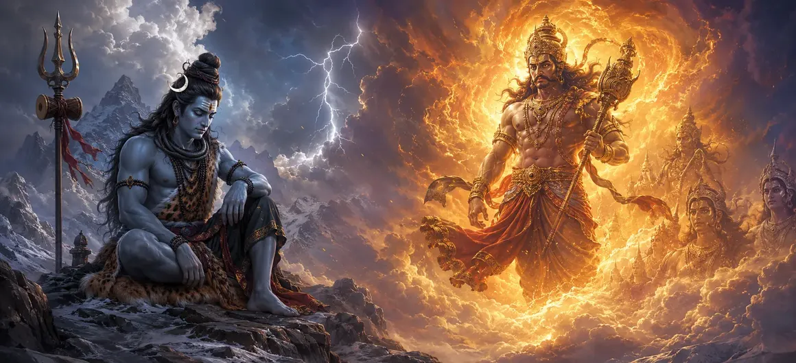

The Origin of Virabhadra
The nineteenth chapter of the Vayaviya Samhita describes the dramatic manifestation of Virabhadra from the supreme wrath of Lord Shiva, kindled by the tragedy of Devi Sati.
Sage Suta narrates how the Lord's grief transformed into a terrifying, cosmic force destined to humble arrogant adharma.
This chapter sets into motion the legendary retribution against King Daksha's unholy sacrifice.
Chapter 19 Highlights
Divine Wrath
Explores the immense grief and cosmic anger of Lord Shiva upon Sati's sacrifice.
Matted Lock Manifestation
Details Shiva pulling a blazing lock from His hair to give birth to the warrior.
Virabhadra's Form
Describes the towering, fierce, and weapon-wielding appearance of Virabhadra.
Gana Army
Illustrates the gathering of terrifying spirits and fierce Ganas ready for battle.
Command to March
Presents Lord Shiva's direct command to dismantle Daksha's arrogant sacrifice.
Path to Retribution
Prepares the narrative for the apocalyptic destruction unfolding in Chapter 20.
Core Topics in This Chapter
The Tragedy of Sati and Shiva's Grief
Sage Suta narrates the heart-wrenching aftermath of Devi Sati casting off her mortal frame at Daksha's sacrificial arena due to extreme insult.
Upon receiving this devastating news, Lord Shiva—the embodiment of transcendental peace—was overcome by profound sorrow and righteous indignation.
The Awakening of Divine Wrath
The sorrow rapidly transmuted into a blazing fire of cosmic wrath, shaking the three worlds and causing terror among the celestial beings.
The balance of righteousness had been shattered by Daksha's arrogance, and divine justice demanded a fierce reckoning.
The Miraculous Birth of Virabhadra
In a burst of supreme fury, Lord Shiva plucked a blazing lock of His matted hair and dashed it violently upon the earth.
From that divine impact arose Virabhadra, towering like a mountain of fire, dazzling, fierce, and fully equipped for destruction.
Terrifying Attributes and Weapons
Virabhadra possessed a thousand arms, eyes blazing like the sun, fierce tusks, and wore a garland of skulls, holding terrifying weapons of war in every hand.
His very presence struck awe and dread into the hearts of sages and gods alike.
Association with Bhadrakali and Ganas
Alongside Virabhadra, the fierce goddess Bhadrakali manifested, accompanied by countless legions of howling Ganas, ghosts, and goblins.
This unstoppable army represented the accumulated fury of the divine against adharma and pride.
Shiva's Command for the Mission
Lord Shiva commanded Virabhadra and his army to march immediately to Daksha's sacrificial arena and completely dismantle the arrogant ritual.
Obeying the supreme master with absolute devotion, Virabhadra roared like thunder and set forth on his historic expedition.
Transition to Chapter 20
Having witnessed the magnificent and fierce birth of Virabhadra in Chapter 19, Sage Suta introduces Chapter 20, 'The Destruction of Daksha's Sacrifice — Part 1'.
Chapter 20 details the arrival of the divine army at the arena and the initial clash with the terrified gods and sages.
Key Teachings of Chapter 19
Consequences of Arrogance
Disrespecting the divine inevitably triggers cosmic correction and accountability.
Power of Shiva's Wrath
The Lord's anger is not malicious but a purifying force restoring cosmic law.
Devotion in Action
Virabhadra exemplifies absolute obedience and readiness to protect divine honor.
Cosmic Balance
When adharma rises, divine forces manifest to re-establish truth and righteousness.
Unyielding Justice
The narrative teaches that pride and hubris cannot escape ultimate cosmic justice.
Epic Prelude
Sets the stage for the legendary retribution detailed in the following chapters.
Spiritual Reflection
The birth of Virabhadra reminds us that divine patience, though vast, has boundaries when confronted with blind ego and disrespect toward universal truth; true power awakens to protect purity and restore sacred order.
Living the Message of Chapter 19
Guard your heart against arrogance, ego, and disrespect towards spiritual truths and higher principles.
Understand that actions have karmic consequences and that righteousness will always find a way to prevail.
channel your inner strength toward protecting what is pure, sacred, and true.
Key Spiritual Concepts
The cosmic wrath of Lord Shiva manifesting to uphold universal order.
The miraculous birth of the fierce warrior from Shiva's matted locks.
The supreme sacrifice of Devi Sati due to humiliation at Daksha's sacrifice.
The simultaneous manifestation of the fierce goddess alongside Virabhadra.
The suppression and correction of unrighteousness and egoistic pride.
The prelude to the destruction of Daksha's arrogant ritual explored in Chapter 20.
Chapter Summary
Vayaviya Samhita Chapter 19 presents The Origin of Virabhadra. Detailing the profound grief of Lord Shiva over Sati's tragedy, the blazing manifestation of Virabhadra from Shiva's matted hair, and the dispatch of the fierce Gana army, this chapter marks a pivotal turning point in the epic narrative. It sets the stage for Chapter 20, 'The Destruction of Daksha's Sacrifice — Part 1', where the divine retribution unfolds.
Frequently Asked Questions
1. What is the primary subject of Vayaviya Samhita Chapter 19?
Chapter 19 details the origin and fierce manifestation of Virabhadra from Lord Shiva's wrath in response to the insults against Devi Sati and the arrogant sacrifice of Daksha.
2. How does Virabhadra manifest?
Lord Shiva plucks a lock of His matted hair, blazing like fire, and strikes it upon the ground, from which the terrifying and powerful warrior Virabhadra emerges.
3. What causes Lord Shiva's divine wrath in this chapter?
The extreme grief and public humiliation suffered by Devi Sati at Daksha's grand sacrificial arena, leading to her sacrifice of life.
4. Who accompanies Virabhadra on his mission?
Virabhadra is accompanied by ferocious hosts of Ganas, terrifying spirits, and Bhadrakali, ready to dismantle Daksha's sacrifice.
5. What is the significance of Virabhadra's creation?
It symbolizes the upholding of cosmic order, the defense of divine honor, and the inevitable reckoning for arrogance and adharma.
6. What is the next chapter for navigation after Chapter 19?
The next chapter for navigation is Chapter 20, titled 'The Destruction of Daksha's Sacrifice — Part 1'.
“From the blazing fire of divine wrath sprang Virabhadra, the cosmic embodiment of justice, ready to humble the pride of adharma.”
Continue Through Vayaviya Samhita
Chapter 19 details The Origin of Virabhadra. Continue to Chapter 20, The Destruction of Daksha's Sacrifice — Part 1.